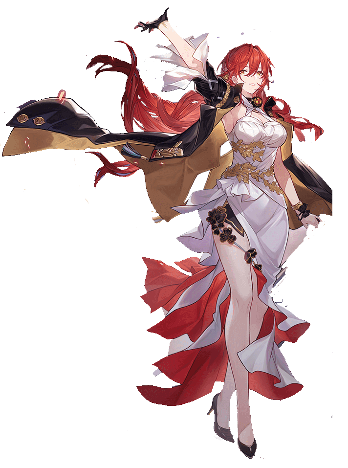
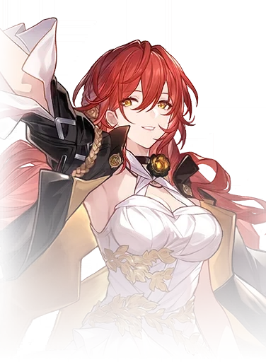

Descripcion del personaje
Himeko es un personaje de cinco estrellas que pertenece a la Vía de la Erudición en Honkai Star Rail. Este personaje forma parte de la tripulación y trabaja como restauradora dentro del Expreso Astral, la podremos ver siempre que queramos en el Vagón Panorámico junto a Pom-Pom.
Tanto su Habilidad Definitiva como los Ataques Adicionales que produce golpean a todos los enemigos que haya en el campo a la vez, mientras que la Habilidad Básica solo golpeará al objetivo y a los enemigos adyacentes a este. Lo bueno es que en general sus habilidades producen un daño bastante decente, pero por la contraparte, realiza pocos ataques adicionales para ser un personaje de Erudición ya que necesita conseguir tres cargas para lanzar un ataque adicional (más abajo te explicamos mejor), pero sin embargo, en el modo Pura Ficción es sin lugar a dudas uno de los personajes más destacados.
Introduccion al personaje
Himeko es la capitana del Astral Express, un tren espacial que viaja entre diferentes mundos. Ella es una exploradora curiosa y decidida, que se embarcó en este viaje después de descubrir y reparar el tren. Himeko, en este juego, mantiene su papel de mentora y líder, guiando al protagonista y al resto de la tripulación en su misión de explorar el universo y combatir amenazas misteriosas.
A pesar de las diferencias entre las dos versiones de Himeko, su esencia como una figura fuerte, protectora y carismática se mantiene en ambos juegos.

Calidad del personaje
VIA del personaje
Erudicion
Estadisticas del personaje
- PV: 1047
- ATQ: 756
- DEF: 436
- VEL: 96
- Provocacion: 75